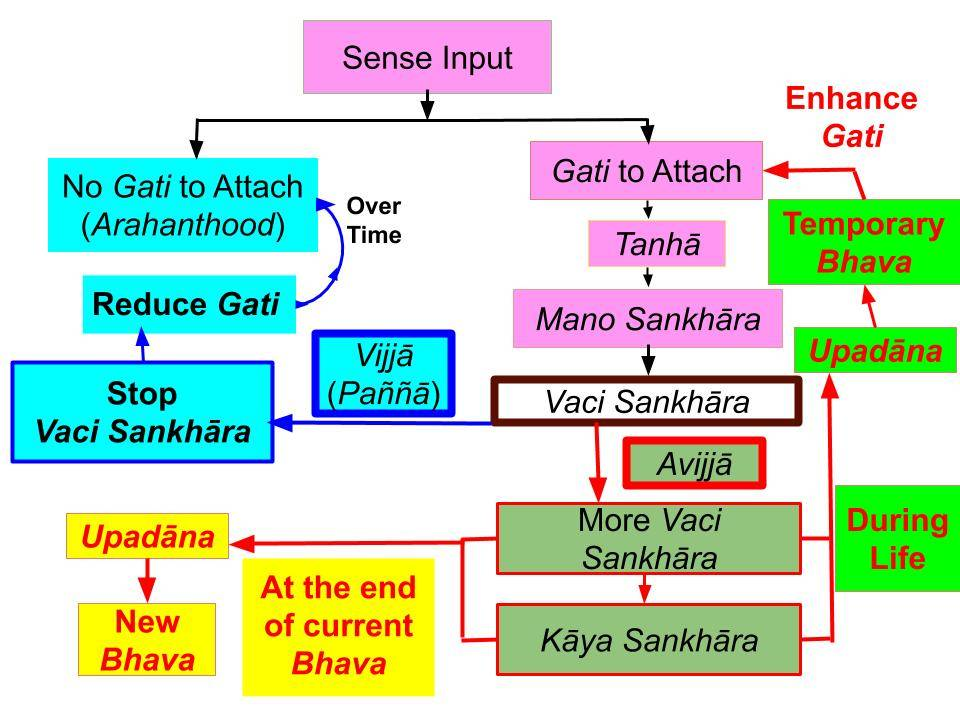

Taṇhā happens automatically due to "bad gati." We have control over "upādāna" because that is when we become aware of the "attachment."
October 25, 2018; revised November 4, 2019; March 30, 2021; September 8, 2022; May 27, 2023
Introduction
1. The difference between taṇhā and upādāna is subtle, and it is critical to understand that difference. It is the key to understanding how to eliminate bad gati and cultivate good gati. That is the way to Nibbāna.
- That understanding is also critically important to get the basic idea behind the Satipaṭṭhāna (and Ānapānasati) bhāvanā.
2. Satipaṭṭhāna (and Ānapānasati) bhāvanā are about being mindful and catching new immoral/unwise thoughts that arise in one's mind. One should stop such thoughts immediately. If the thought is good (say about a Dhamma concept), one should stay on it.
- The English word "thought" is too simplified. It includes védanā, sañña, saṅkhāra, and viññāna, each of which is complex; see "Mental Aggregates" and "Viññāna – What It Really Means."
- Sankhāra is especially crucial since kammic energy for future vipāka is created by the three types of saṅkhāra: manō saṅkhāra, vaci saṅkhāra, and kāya saṅkhāra; see, "Sankhāra – What It Really Means."
- Therefore, we will stay with those Pāli words.
Manō saṅkhāra Arise Automatically Due to Gati
3. If we get interested in a sensory input (ārammaṇa,) manō saṅkhāra automatically arises in our minds due to sensory input based on our gati.
- We don’t experience those initial manō saṅkhāra, and we only experience them when it comes to the next stage called vaci saṅkhāra ("talking to oneself").
- That is an important point. Even if a single word is not spoken, vaci saṅkhārās accumulate if one is "thinking to oneself" about that object. If one gets more interested, one may speak out, and that is still a vaci saṅkhāra; see "Correct Meaning of Vacī Sankhāra." Both types of vaci saṅkhāra involve vitakka and vicāra cetasika.
- If the interest builds up, one may take bodily action. Such bodily actions are initiated by kāya saṅkhāra.
- All three types of saṅkhāra arise in mind.
- The strength of kammic energy created increases in the following order: manō, vaci, kāya saṅkhāra.
4. We get “attached” to various ārammaṇa AUTOMATICALLY based on our gati. Then manō saṅkhāra arises automatically according to gati. That will happen as long as we have taṇhā (either via kāma rāga or paṭigha; avijjā is present in both cases). We automatically get attracted; see “Tanhā – How We Attach Via Greed, Hate, and Ignorance.“
- As pointed out in that post, the term “taṇhā” means getting attached (“thána” meaning "place" + “hā” meaning getting welded or attached (තැනට හා වීම in Sinhala).
- That initial attachment arises AUTOMATICALLY based on our gati. We don't have direct control over it.
- To stop such manō saṅkhāra from arising, we need to change our gati over time.
Importance of Vaci Sankhāra
5. If the attachment is strong enough, the mind will now start thinking about the ārammaṇa consciously, i.e., vaci saṅkhāra arise, and we become aware of these vaci saṅkhāra.
- As soon as we become aware of this “attachment” to something, we CAN BE mindful, think about its consequences, and move away from it. Therefore, we can stop such thoughts at the vaci saṅkhāra stage; see “Correct Meaning of Vacī Sankhāra.“
- However, our minds like to enjoy such vaci saṅkhāra. It is easy to do and is very tempting. Many people get their sexual satisfaction from just "daydreaming" about an event in the past or sexual encounters that might occur in the future.
6. In the “Na Santi Sutta (SN 1.34)“, the Buddha defined “kāma” to be this "daydreaming" or "generating more and more thoughts about it": “Na te kāmā yāni citrāni loke, Saṅkapparāgo purisassa kāmo..”.
Translated: “World’s pretty things are not kāma; a person creates his/her kāma by thinking about those pretty things (rāga saṅkappa)..”.
- That is a critical point.
- Furthermore, we "daydream" about not just sex but other sensory pleasures too. See, "What is “Kāma”? It is not Just Sex".
- Even if one did not physically do anything, one could accumulate a lot of bad kamma merely by generating such vaci (abhi)saṅkhāra. See “Correct Meaning of Vacī Sankhāra.“
- The world is full of beautiful things, tasteful foods, sweet smells, etc. Seeing, tasting, and smelling them is not NECESSARILY kāma. For example, the Buddha accepted delicious foods but never generated manō/vaci saṅkhāra about them. He had removed all gati.
Vaci Sankhāra Responsible for Upādāna
7. Anyone who is not yet an Anāgāmi is likely to generate such defiled manō saṅkhāra automatically. Then that leads to generating vaci saṅkhāra or "kāma saṅkappa" at some level.
- If we “go with the flow” and go along enjoying this "daydreaming" or generating vaci saṅkhāra, that is what is called “upādāna.“
- Upādāna means “pulling it closer (in one's mind)” (“upa” + “ādāna,” where “upa” means “close” and “ādāna” means “pull”).
8. Therefore, we cannot control the “taṇhā” or “initial attachment” step. It happens with manō saṅkhāra that arise automatically due to our gati.
- And those gati cannot be removed just by abstaining from experiencing such sensory events.
- First, we need to reduce our gati to attach to that type of sensory input. Stopping vaci saṅkhāra as soon as we become aware of them is the way to reduce bad gati. Vaci saṅkhāra are really "nutrients" or "food/water" for cultivating those gati.
- If we keep the bad habit of generating vaci saṅkhāra, that gati will only get stronger with time. It is essential to stop giving such "mental food" to those bad gati.
Killing Bad Habits by Stopping Vaci Sankhāra
9. The Buddha explained it this way: Humans cannot live more than seven days without food AND water. We will die.
- But if We stop taking solid food but only water, We can live for several weeks.
- However, one may be tempted to take in a little food. That will break the process and the clock re-starts.
10. That is the analogy for killing a habit. One can kill the habit (or the addiction) relatively quickly by doing the following. Stop kāya saṅkhāra (actual act, which is like solid food) and vaci saṅkhāra (thinking/talking about it, which is like water).
- But if we stop doing the activities (kāya saṅkhāra) but keep generating vaci saṅkhāra, then it may NEVER be removed entirely.
- So, the analogy is not that good. Vaci saṅkhārās are almost as bad as kāya saṅkhāra, i.e., vaci saṅkhāra are like "snacks" (more than just water in that analogy).
- The more times we break that discipline, the longer it takes to break that habit or gati. That is why we must always be mindful of our thoughts, speech, and actions. That is the key to Ānapānasati and Satipaṭṭhāna bhāvanā.
Key to Ānapānasati
11. For example, one can break the drug addiction in a shorter time (say a month) if he has the discipline to stop taking it and think about it.
- If he stops taking the drug but enjoys thinking about it (vaci saṅkhāra), it will not work. He may go on without using drugs for months and months, but he may lose the resolve and return to drugs one day.
- That happens to people addicted to different things like alcohol, smoking, or even over-eating. They may temporarily stop those activities, but months later, they break them. That is because they had not stopped generating vaci saṅkhāra or engaging in upādāna for that activity.
- That is the basis of Ānāpānasati Bhāvanā; see "Key to Ānapānasati – How to Change Habits and Character (Gati)."
Paṭicca Samuppāda Process Starts With a Sensory Input
12. Most Paṭicca Samuppāda processes start with a sensory input making one's mind attached to an ārammaṇa. The following chart illustrates the processes involved.

For a pdf file for printing: "Tanha and Upadana."
- As we can see, the key is to stop generating vaci saṅkhāra. As soon as we become aware of "bad thoughts," we must stop them. Then, over time, that "bad gati" will reduce in strength and eventually disappear.
- Therefore, by being mindful and acting with paññā (wisdom, which is vijjā or the opposite of avijjā), one can reduce upādāna and gradually get rid of bad gati.
- In addition to contributing to bad gati, vaci saṅkhārās make one grasp a new "bad bhava" at the cuti-paṭisandhi moment.
Basis of Satipaṭṭhāna and Ānapānasati Bhāvanā
13. That is the basis of the Satipaṭṭhāna (and Ānapānasati) bhāvanā; see, "7. What is Ānāpāna?" and "Maha Satipaṭṭhāna Sutta."
- If we are mindful, we can immediately become aware of a "bad thought" at the vaci saṅkhāra stage. Thereby, we CAN stop the upādāna step, i.e., we can decide not to “pull it closer.”
- For example, if we see an attractive person, we may automatically start looking at him/her. But once we become aware, we can look away and start thinking about something else.
- In another extreme example, we may get angry with someone and may start saying something harsh. But as soon as we realize that we are going back to our "bad old habit," we can even stop in the mid-sentence. If we realize our mistake even after saying something terrible, we NEED TO apologize for our harsh speech. That may be difficult initially, but that is the only way to eliminate such bad habits.
14. When we start controlling the CRITICAL upādāna step, our gati will slowly change. Then, with time, the first step of “taṇhā” will gradually disappear.
- That is the basis of Ānapānasati and Satipaṭṭhāna meditations.
Tanhā to Upādāna to Bad Gati
15. A bottle of poison on a table will not harm us. It can kill someone only if he/she takes it and drinks the contents.
- It is the same with upādāna. There could be many "pleasing things" out there in the world. But if we understand the anicca nature (that those things will only lead to suffering in the end), our minds will not crave them. That will stop upādāna.
- For example, we know that some flies attracted to light get burned. They don't know that even if the shiny light looks attractive, it can kill them. In the same way, a fish sees only the bait. It does not see the hook.
- We don't touch a hot stove that is glowing red because we know that it can burn us.
- But most don't realize that sensory pleasures only lead to suffering. Of course, one must take care of the extreme sensory pleasures first. As I always say, it is a step-by-step process; see, "Is It Necessary for a Buddhist to Eliminate Sensual Desires?".
16. Gradually controlling upādāna is the way to reduce bad gati, cultivate good gati, and eventually get rid of taṇhā.
- Removal of taṇhā is the same as removing anusaya.
- To be more effective, one must also reduce avijjā by learning Dhamma and comprehending Tilakkhana (anicca, dukkha, anatta nature).
Cultivating Good Gati via Vaci Sankhāra
17. Of course, it works in reverse too. We can cultivate "good gati" by continually thinking about related things.
- For example, if a Dhamma concept comes to mind, we should cultivate it. Then it will become a habit to think about Dhamma concepts.
- Nowadays, when I get up, the first thing that comes to my mind is a Dhamma concept or a problem that I had been thinking about the previous day.
Summary
18. Finally, there are two things one must do to make progress on the Path.
- One is to reduce avijjā by learning Dhamma.
- The other is to reduce upādāna by controlling vaci saṅkhāra, as we discussed above.
- If we do both, the progress will be much faster.